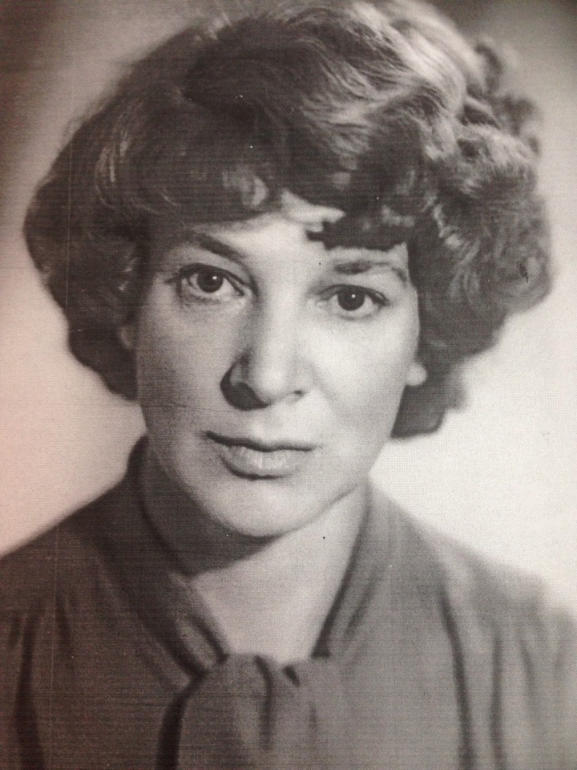
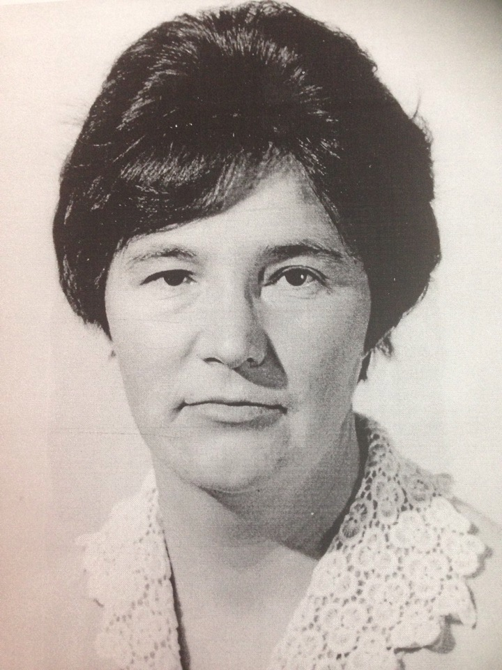

Заслуженные учителя школы
Жуков Владимир ЛаврентьевичВ 1952 году получил звание «Заслуженный учитель Российской Федерации» Учитель биологии и химии |
|
Копеина Валентина ИвановнаВ году получила звание «Заслуженный учитель Российской Федерации» Учитель русского языка, литературы |
|
|  | Попова Людмила Андреевна«Заслуженный учитель Российской Федерации» Учитель русского языка и литературы |
Сухарева Светлана ПетровнаВ 1983 году удостоена званием «Заслуженный учитель Российской Федерации» Учитель русского языка и литературы |
|
Угрюмов Андрей Андреевич«Заслуженный учитель Российской Федерации» Учитель истории , немецкого языка, русского языка и литературы |
|
|  | Юшманова Нина Владимировна«Заслуженный учитель Российской Федерации» Учитель биологии и химии |
Кормашова Ольга Ильинична«Заслуженный учитель Российской Федерации» Учитель русского языка и литературы |